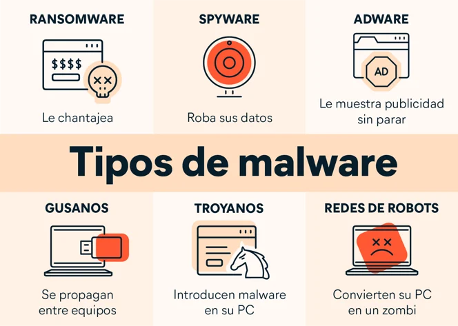

Malware: La Amenaza Digital Versátil
El malware, abreviatura de "software malicioso," representa una de las amenazas cibernéticas más omnipresentes y cambiantes en el mundo digital. El término "malware" se refiere a una amplia variedad de software diseñado para dañar, robar información o realizar acciones no deseadas en sistemas informáticos sin el conocimiento o el consentimiento del usuario. A lo largo de los años, el malware ha evolucionado en términos de sofisticación y técnicas de distribución, lo que lo convierte en una amenaza constante y desafiante para la seguridad cibernética.

Tipos de Malware
Existen varios tipos de malware, cada uno con sus propios objetivos y métodos de operación:
- Virus: Los virus son programas que se replican y se adjuntan a archivos legítimos. Cuando se ejecuta un archivo infectado, el virus se propaga y puede dañar o modificar archivos y programas.
- Gusanos (Worms): Los gusanos son programas autoejecutables que se propagan rápidamente a través de redes y sistemas, a menudo explotando vulnerabilidades de software. No requieren la interacción del usuario para propagarse.
- Ransomware: El ransomware cifra los archivos del usuario y exige un rescate para desbloquearlos. Es un tipo de malware que ha causado pérdidas financieras significativas y trastornos en todo el mundo.
- Spyware: El spyware recopila información sobre la actividad del usuario sin su consentimiento y la envía a terceros. Puede robar datos sensibles, como contraseñas y detalles de tarjetas de crédito.
- Adware: El adware muestra anuncios no deseados en el sistema del usuario y, en algunos casos, puede recopilar información sobre la actividad en línea para su uso en publicidad dirigida.
¿Cómo se propaga el malware?
- Archivos Adjuntos de Correo Electrónico: Los correos electrónicos de phishing suelen contener archivos adjuntos con malware.
- Descargas de Internet: Descargar software de fuentes no confiables puede resultar en la instalación de malware.
- Vulnerabilidades de Software: Los malware pueden aprovechar vulnerabilidades en sistemas operativos y aplicaciones para infectar dispositivos.
- Dispositivos USB y otros medios extraíbles: El malware puede propagarse mediante dispositivos USB y otros medios de almacenamiento extraíbles.
Consecuencias del Malware
Las consecuencias de una infección de malware pueden ser graves, incluyendo la pérdida de datos, el robo de información confidencial, la interrupción de servicios y el daño a la reputación de una organización. Además, el costo de recuperarse de un ataque de malware puede ser significativo.
¿Cómo protegerse del malware?
- Mantener Software Actualizado: Mantener el sistema operativo y todas las aplicaciones actualizadas con los últimos parches de seguridad es fundamental para cerrar posibles brechas de seguridad.
- Usar Software de Seguridad: Utilizar software antivirus y antimalware puede ayudar a detectar y eliminar amenazas.
- Educar a los Usuarios: La educación sobre prácticas seguras de navegación y el reconocimiento de amenazas, como correos electrónicos de phishing, es esencial.
- Escanear Archivos Adjuntos: Antes de abrir archivos adjuntos o hacer clic en enlaces en correos electrónicos o mensajes, se deben escanear en busca de malware.